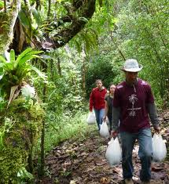

Stories to Tell
Creating a story with the help of the user can be fun and entertaining. Making a story with missing words is the beginning. Then the user gets to pick the words without knowing the story. When they are combined, the result is often silly and almost always generates a good laugh.
Under Construction